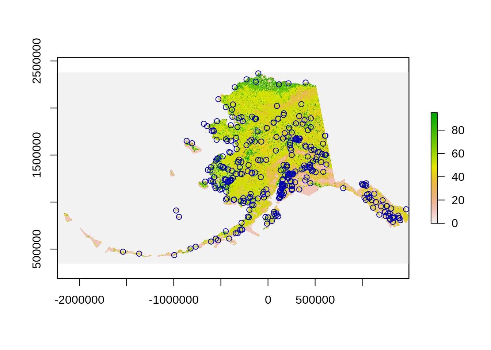
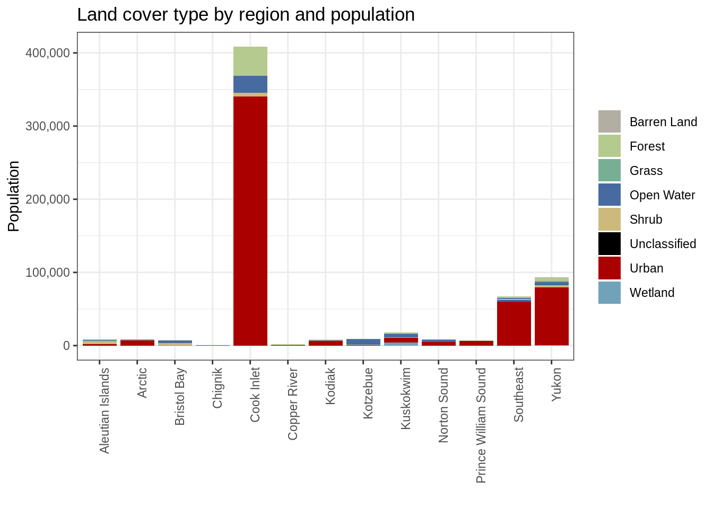
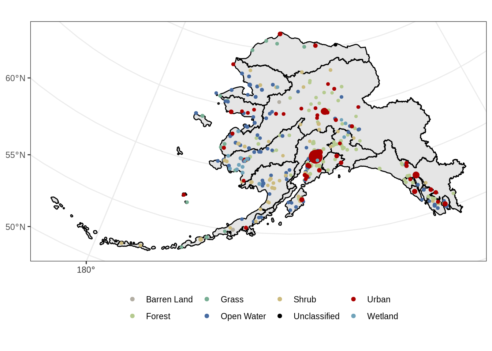
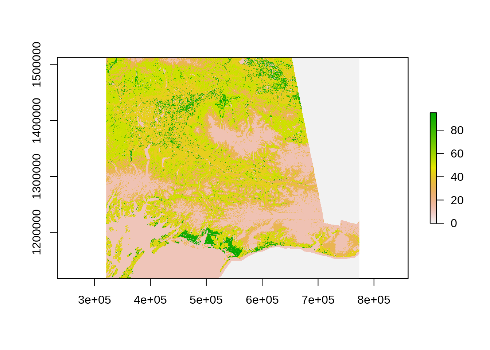
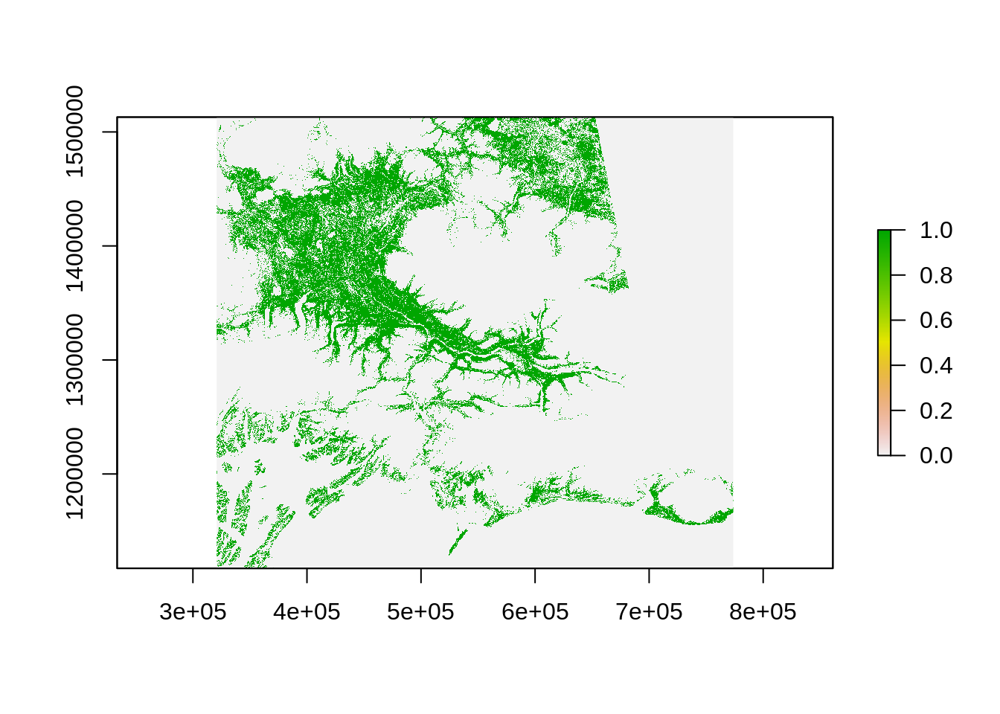
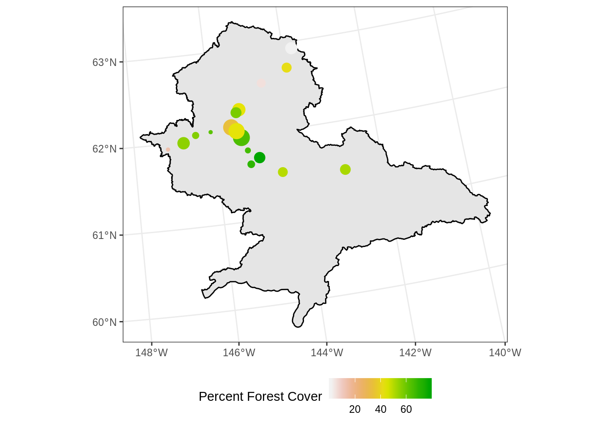

18 Raster Analysis
18.1 Learning Objectives
In this lesson, you will learn:
- How to use the
rasterpackage to import geospatial data - how to combine raster and vector to conduct geospatial analysis in
R
18.2 Introduction
We just have seen how to conduct spatial analysis in R using vector data. There is a second categories of geospatial data: raster data.

In a nutshell, raster data is a matrix of cells (or pixels) organized into rows and columns. Each cell / pixels stores a value. Satellite imagery, aerial imagery and radar from Earth Observation Systems are a great source of environmental data.

As discussed in the previous section, raster will have a Coordinate Reference System (CRS) defining the mathematical formula used to used to define the position of the raster pixels on earth. Few extra terms you might hear when talking about raster:
- The spatial resolution of a raster refers to the size of a pixel. It is often defined as one number (e.g. 30m) assuming the pixels are squares; However it is not a requirement and pixels can be rectangular (have edges of different length).
- The extent of a raster refers to the area on Earth that is covered by the entire raster. It be defined in many ways, but it will often be defined using a specific corner, the pixel size, and the number of pixels along the x and y dimensions.
- The number of bands of a raster refers to a set of images over the same area but with value corresponding to different “bands” of the electromagnetic spectrum. For example, a typical RGB image will be made of 3: Red, Green, Blue. Often you want to stack those images to conduct an analysis as the area of observation matched perfectly. Satellite and other sensors can of course capture information far beyond the visible part of the electromagnetic spectrum.

18.2.1 Raster File Formats
As vector data, raster data comes in various file formats:
18.2.1.1 TIFF/GeoTIFF
TIFF/GeoTIFF are probably the most common raster formats. GeoTIFFs consist of one file with a specific header that encapsulates the geospatial information. There is a second way to add geospatial information to a TIFF file by adding an extra “world” file .tfw with the same name as the TIFF file. This .tfw is a simple text file that defines various parameters to define the raster geospatial information.
18.2.1.2 IMG
This is a proprietary form from the remote sensing software ERDAS Imagine. It has the advantage to be able to store multiple bands in one file and also to have great compression capacity.
18.2.1.3 NetCDF
The Network Common Data Form, or netCDF, is an interface to a library of data access functions for storing and retrieving data in the form of arrays. A Subset of this format, the Hierarchical data format (HDF4 or HDF5), is a format that is often used by satellite imagery data providers. Through its great handling of multidimensional data, it can be used to store both space and time information.
One word on ESRI geospatial database storing raster data: it is unfortunately to sue R to read this data format. R relies on open source libraries to import and process geospatial data (GDAL, GEOS, PROJ, …), and ESRI has not yet opened this data format to those libraries.
18.3 The raster Package
The raster package is THE package in R to import and process raster data. It can handle many of the formats mentioned above and more.
To import a raster in R, you will use the raster function for a single band raster. For multi-band raster, you can use the brick() function instead.
For this example, we are going to read a land cover map of Alaska from the The Multi-Resolution Land Characteristics (MRLC) consortium.
The original file was quite large quite large (~8GB), so we have already resampled to a lower spatial resolution of 50m and saved it in a shared directory on the server.
library(dplyr)
library(sf)
library(raster)
library(ggplot2)
library(curl)
library(scales)
# House keeping to setup data from the vector chapter
ak_regions <- read_sf("data/shapefiles/ak_regions_simp.shp")
ak_regions_3338 <- ak_regions %>%
st_transform(crs = 3338)
pop <- read.csv("data/shapefiles/alaska_population.csv")
pop_4326 <- st_as_sf(pop,
coords = c('lng', 'lat'),
crs = 4326,
remove = F)
pop_3338 <- st_transform(pop_4326, crs = 3338)
pop_joined <- st_join(pop_3338, ak_regions_3338, join = st_within)Let us now read this raster into R:
Look at the raster:
## class : RasterLayer
## dimensions : 40716, 74552, 3035459232 (nrow, ncol, ncell)
## resolution : 50, 50 (x, y)
## extent : -2232595, 1495005, 344575, 2380375 (xmin, xmax, ymin, ymax)
## crs : +proj=aea +lat_1=55 +lat_2=65 +lat_0=50 +lon_0=-154 +x_0=0 +y_0=0 +ellps=GRS80 +towgs84=0,0,0,0,0,0,0 +units=m +no_defs
## source : /tmp/RtmpakeRBa/file49ed3b556455
## names : file49ed3b556455
## values : 0, 95 (min, max)It is always good to check if everything aligns well:
 ### Extracting information from raster
OK, everything looks good. Now we want to find the most frequent land cover within a radius of 500m. To do so we can use the extract function. This function can handle, the buffering and even have a modal function that will let us find the mode.
# Compute the most frequent land cover type around the population
raster_points <- extract(lc_3338, pop_3338, buffer=500, fun=modal)
# Add those values to our data
pop_joined$land_cover <- raster_pointsNote that I am using 500 for the buffer radius because we know the unit is meter from the projection definition: crs : +proj=aea +lat_0=50 +lon_0=-154 +lat_1=55 +lat_2=65 +x_0=0 +y_0=0 +ellps=GRS80 +towgs84=0,0,0,0,0,0,0 **+units=m**.
At this point, we only have the values for this raster and do not know yet what are the corresponding land covers. Luckily we can look at the metadata here: https://www.mrlc.gov/data/legends/national-land-cover-database-2011-nlcd2011-legend
This not a super friendly format. We have already processed this information (see the end of this chapter to learn how) and stored it in a csv:
## ID COUNT Red Green Blue Land.Cover.Type
## 1 0 6539917102 0 0 0 Unclassified
## 2 11 267506887 71 107 161 Open Water
## 3 12 77582023 209 222 250 Perennial Ice/Snow
## 4 21 383719 222 202 202 Developed, Open Space
## 5 22 1080686 217 148 130 Developed, Low Intensity
## 6 23 145477 238 0 0 Developed, Medium Intensity
## 7 24 52478 171 0 0 Developed, High Intensity
## 8 31 146969306 179 174 163 Barren Land
## 9 41 61258881 104 171 99 Deciduous Forest
## 10 42 259612828 28 99 48 Evergreen Forest
## 11 43 61771547 181 202 143 Mixed Forest
## 12 51 322951293 166 140 48 Dwarf Shrub
## 13 52 426246570 204 186 125 Shrub/Scrub
## 14 71 32455056 227 227 194 Grassland/Herbaceous
## 15 72 107796396 202 202 120 Sedge/Herbaceous
## 16 74 582776 120 174 148 Moss
## 17 81 51213 220 217 61 Pasture/Hay
## 18 82 319495 171 112 40 Cultivated Crops
## 19 90 65732442 186 217 235 Woody Wetlands
## 20 95 56251009 112 163 186 Emergent Herbaceous Wetlands# Read the land cover legend
Legend_lc <- read.csv("/home/shares/scientist/ds-workshop/legend_ak_nlcd_2011.csv", stringsAsFactors = FALSE)
Legend_lcNow we can join this information to our main data frame and since the categories are pretty detailed, we will also aggregate them to a coarser level of information:
# It is a lot of categories, let us consolidate this
Legend_lc <- Legend_lc %>%
mutate(main_lc = ifelse(ID %in% 40:49, "Forest",
ifelse(ID %in% 20:29, "Urban",
ifelse(ID %in% 50:59, "Shrub",
ifelse(ID %in% 70:79, "Grass",
ifelse(ID %in% 80:89, "Crops",
ifelse(ID %in% 90:99, "Wetland", Land.Cover.Type)
)
)
)
)
)
)
# Join the LC categories to the population data
pop_3338_cover <- left_join(pop_joined, Legend_lc, by=c("land_cover"="ID")) %>%
dplyr::select(-Red, -Green, -Blue, -Land.Cover.Type)18.3.1 Plotting
# Create color palette by keeping last color of each group
pal <- Legend_lc %>%
group_by(main_lc) %>%
slice(n()) %>% # Keeping the last color of the groups
ungroup %>%
arrange(ID) %>%
mutate(color_hex = rgb(Red, Green, Blue, max = 255)) %>%
dplyr::select(main_lc, color_hex)
# turn pallete into a list for plotting
pal_list <- pal$color_hex
names(pal_list) <- pal$main_lc
# Plot by region
ggplot(pop_3338_cover, aes(region, population, fill = main_lc)) +
geom_col() +
scale_y_continuous(labels = comma) +
scale_fill_manual(values = pal_list) +
theme_bw() +
theme(axis.text.x = element_text(angle = 90, hjust = 1)) +
ggtitle("Land cover type by region and population") +
labs(fill = "", y = "Population", x = "")
ggplot() +
geom_sf(data = ak_regions_3338, aes(), color = "black") +
geom_sf(data = pop_3338_cover, aes(color = main_lc,
size = population), show.legend = "point") +
scale_size_continuous(guide = F) +
scale_color_manual(values = pal_list) +
theme_bw() +
theme(legend.position = "bottom", legend.title = element_blank())
18.3.2 Calculation with raster
A Very useful function of the raster package is the function calc. As the name suggest this function helps you to do computation on raster. Continuing our example above, we want to compute a percentage of area that is forest.
Let us first select a region of interest:
Crop the raster using the region:

The way calc works is that you need to create a function to be applied to the raster using calc. Here is the function we will use create a binary mask for forest:
# Function to create a binary mask for forest
forest_masker <- function(x){
x[x<40 | x>49] <- 0
x[x>=40 & x<=49] <- 1
x
}Now we can use the calc function to apply this function to every pixels:

As previously, we can now use the extract function to count the number of forested pixels:
# Filter the population data for the copper region
copper_pop_3338 <- pop_3338_cover %>%
filter(region == "Copper River")
# Use those locations to extract the number of pixels wth forest
forested_count <- extract(copper_forested, copper_pop_3338, buffer=500, fun=sum)Adding the values back to the main data set:
copper_pop_3338$forest_cov <- 100 * forested_count / (20*20) # 20 pixels within the diameter
head(copper_pop_3338)## Simple feature collection with 6 features and 12 fields
## geometry type: POINT
## dimension: XY
## bbox: xmin: 356847.6 ymin: 1318282 xmax: 505439 ymax: 1433557
## epsg (SRID): 3338
## proj4string: +proj=aea +lat_1=55 +lat_2=65 +lat_0=50 +lon_0=-154 +x_0=0 +y_0=0 +ellps=GRS80 +towgs84=0,0,0,0,0,0,0 +units=m +no_defs
## year city lat lng population region_id region
## 1 2015 Chistochina 62.57178 -144.6542 59 5 Copper River
## 2 2015 Chitina 61.51583 -144.4369 80 5 Copper River
## 3 2015 Copper Center 61.97696 -145.3297 405 5 Copper River
## 4 2015 Eureka Roadhouse 61.93861 -147.1681 0 5 Copper River
## 5 2015 Gakona 62.30194 -145.3019 205 5 Copper River
## 6 2015 Glennallen 62.10917 -145.5464 366 5 Copper River
## mgmt_area land_cover COUNT main_lc geometry forest_cov
## 1 2 90 65732442 Wetland POINT (477473 1433557) 5.25
## 2 2 41 61258881 Forest POINT (505439 1318282) 49.75
## 3 2 42 259612828 Forest POINT (451821.3 1362933) 65.00
## 4 2 52 426246570 Shrub POINT (356847.6 1347480) 13.00
## 5 2 41 61258881 Forest POINT (448515.1 1399150) 43.50
## 6 2 21 383719 Urban POINT (438715.9 1376141) 33.50Plotting the percentage of forested area in the 1 km^2 surround of the population centers:
ggplot() +
geom_sf(data = copper_region_3338, aes(), color = "black") +
geom_sf(data = copper_pop_3338, aes(color = forest_cov,
size = population)) +
scale_size_continuous(guide = F) +
scale_colour_gradientn(colours = terrain.colors(10, rev=TRUE)) +
theme_bw() +
theme(legend.position = "bottom") +
labs(color = "Percent Forest Cover")
18.4 Other Thoughts
18.4.1 Raster processing can be slow
Processing raster in R is not fast and raster processing can quickly involve large data set. This is especially true when reprojecting large raster. It is therefore also good to learn how to use other tools to do such tasks. gdal at the command line is a great one (see gdalwrap).
It is also very important to process raster the correct way. Before starting the processing of large raster, we strongly recommend you read this information: https://rspatial.org/raster/appendix1.html
18.4.2 Preprocessing we did
Actually because the original Land Cover raster was using a img format, it was possible to store more information then the pixel values. This format can handle categorical data and attach extra information, we can get the colors as specified by the data creator as well as the categories corresponding to a specific values. The the raster object in R use a S4 format that allows it to store specific information into slots. You can access these slots using the @. Here how we created the legend csv file you used:
# Read the original raster
lc <- raster("/home/shares/scientist/ds-workshop/LC30/ak_nlcd_2011_landcover_1_15_15.img")
# Look at the table attached
lc@data@attributes
# Remove the value without any pixel
legend_lc <- lc@data@attributes[[1]] %>%
filter(COUNT!=0) %>%
dplyr::select(-Opacity)
# Write the csv
write_csv(legend_lc, "/home/shares/scientist/ds-workshop/legend_ak_nlcd_2011.csv")This is how we reprojected to original data and resampled it to a 50m resolution instead of the 30m. Note that the use the Nearest Neighbor method ngb to compute the new raster as this algorithm keeps the original values